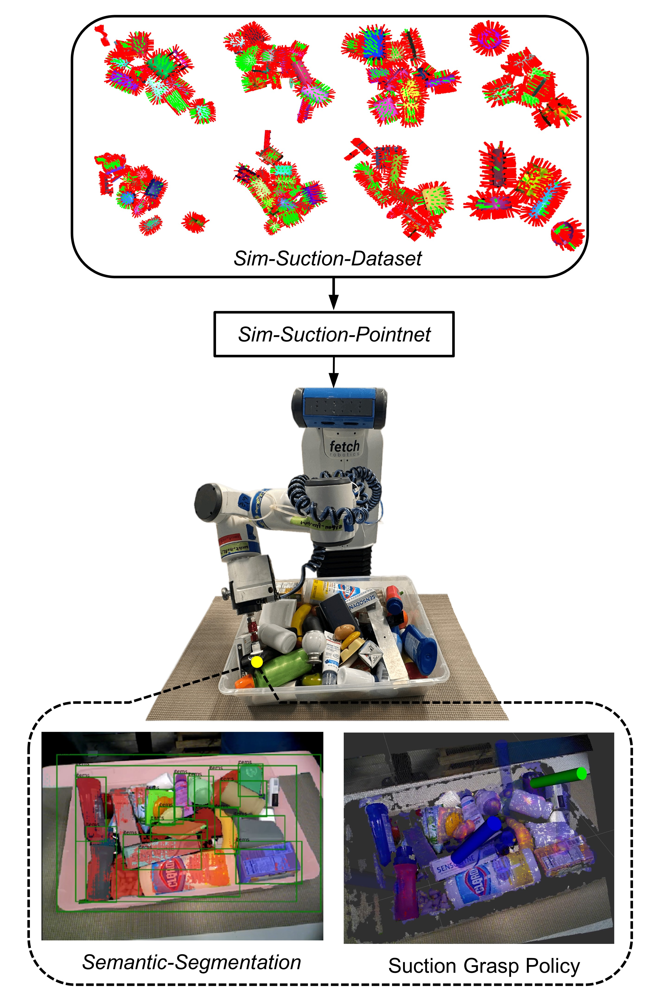
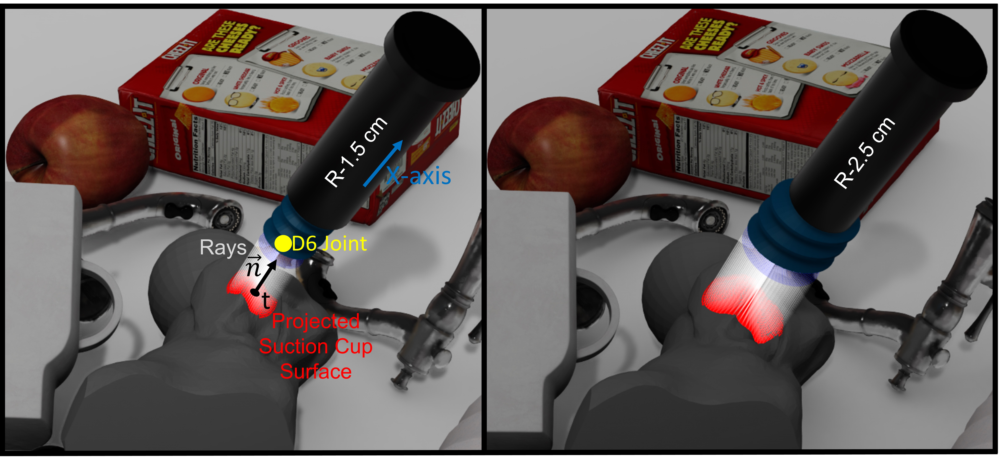
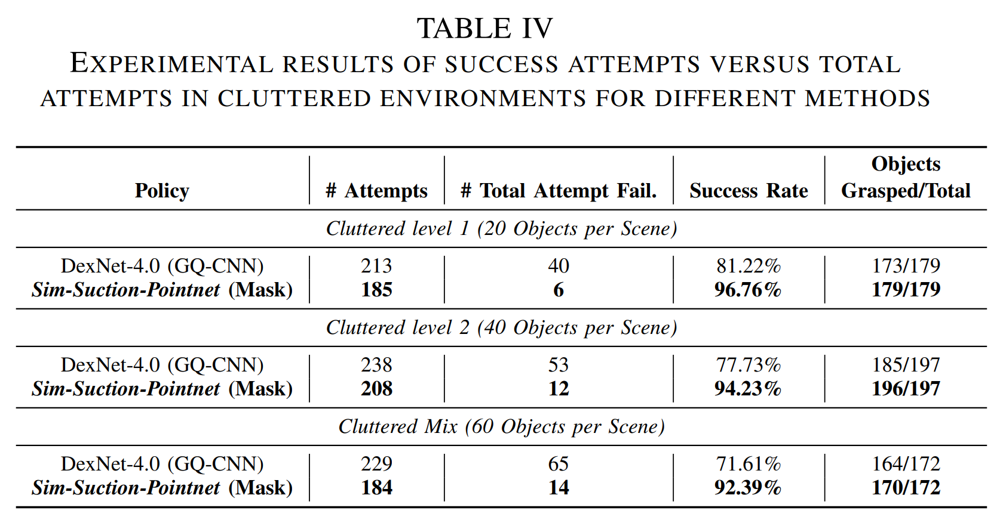

This paper presents Sim-Suction, a robust object-aware suction grasp policy for mobile manipulation platforms
with dynamic camera viewpoints, designed to pick up unknown
objects from cluttered environments. Suction grasp policies
typically employ data-driven approaches, necessitating large-scale,
accurately-annotated suction grasp datasets. However, the
generation of suction grasp datasets in cluttered environments
remains underexplored, leaving uncertainties about the relationship
between the object of interest and its surroundings. To
address this, we propose a benchmark synthetic dataset, Sim-
Suction-Dataset, comprising 500 cluttered environments with 3.2
million annotated suction grasp poses. The efficient Sim-Suction-
Dataset generation process provides novel insights by combining
analytical models with dynamic physical simulations to create
fast and accurate suction grasp pose annotations. We introduce
Sim-Suction-Pointnet to generate robust 6D suction grasp poses
by learning point-wise affordances from the Sim-Suction-Dataset,
leveraging the synergy of zero-shot text-to-segmentation. Real-world
experiments for picking up all objects demonstrate that
Sim-Suction-Pointnet achieves success rates of 96.76%, 94.23%,
and 92.39% on cluttered level 1 objects (prismatic shape),
cluttered level 2 objects (more complex geometry), and cluttered
mixed objects, respectively. The Sim-Suction policies outperform
state-of-the-art benchmarks tested by approximately 21% in
cluttered mixed scenes.
Figures and Tables

Overview of Sim-Suction. The Sim-Suction is a deep-learning based
policy to determine the robust suction grasp poses in cluttered environments.
It has the following components: Sim-Suction-Dataset, a large-scale synthetic
dataset for suction cup gripper that combines analytical model and physical
simulation; Sim-Suction-Pointnet, an object-aware point-wise affordance
network that uses text prompt to predict grasp success probability for given
picking-up task.

Left (1.5 cm radius bellows suction cup). We evaluate the seal performance by casting dense rays along surface normal vectors from the suction cup surface towards the object surface. To evaluate the suction dynamics, we model the suction cup gripper with a 6 degree of freedom joint. We set the suction cup bending angle limit to lock individual axes. We set 20 N force limit for 1.5 cm suction cup and check if the 6D joint can be created and maintained during the manipulator movement.
Right (2.5 cm radius bellows suction cup). We set the 30 N force limit for 2.5 cm suction cup.
The Sim-Suction 6D suction grasp pose policy. The green marker represents the 6D grasp pose for the object instance with the highest confidence score. The transparency of the blue markers indicates the confidence score, with higher transparency implying lower confidence and vice versa.
The Sim-Suction policy task sequence examples. The policy demonstrates robust grasping reliability in real-world scenarios. The figure displays the policy applied in two tasks: (a) "pick up all objects", where the robot continuously attempts grasps until the table surface is clear, and (b) "pick up a specific object", where the policy focuses on grasping a target object based on the text prompt input.
(Top) The experimental setup with a Fetch robot equipped with the Modular End-Effector System.
(Bottom) We choose 60 household items, with 20 objects in Level 1 (primitive shapes) and 40 objects in Level 2 (varied geometries). These objects are considered novel to the Sim-Suction-Pointnet policy, as it has no prior knowledge of them. The objects feature a range of challenging characteristics, such as complex geometries, irregular shapes, and varied surface textures, making the task more difficult.

@misc{li2023simsuction,
title={Sim-Suction: Learning a Suction Grasp Policy for Cluttered Environments Using a Synthetic Benchmark},
author={Juncheng Li and David J. Cappelleri},
year={2023},
eprint={2305.16378},
archivePrefix={arXiv},
primaryClass={cs.RO}
}
Acknowledgements
The authors would like to acknowledge the use of the
facilities at the Indiana Next Generation Manufacturing Competitiveness Center (IN-MaC) for this paper. A portion of
this work was supported by a Space Technology Research
Institutes grant (# 80NSSC19K1076) from NASA’s Space
Technology Research Grants Program.